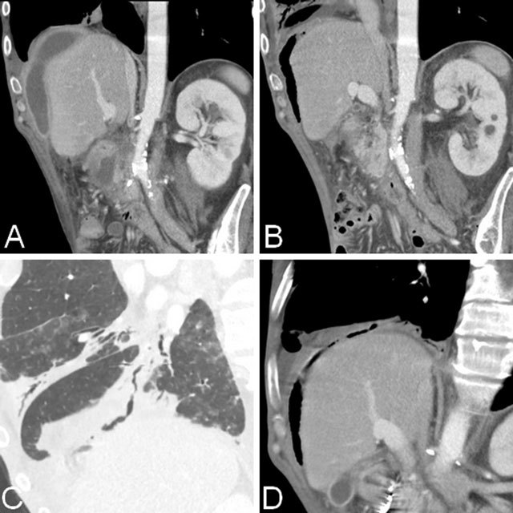
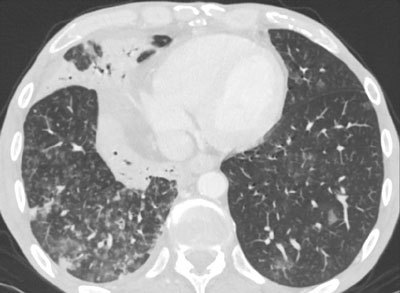
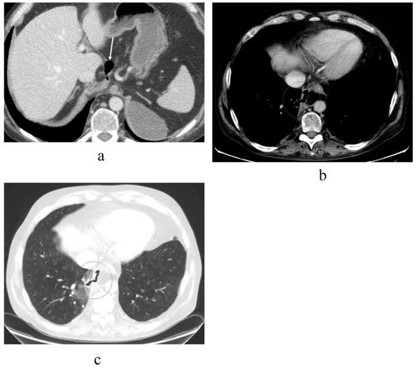

1934 — Rò tụy–phế quản: viêm phổi tái phát cùng thùy + nang giả tụy chứa khí xuyên hoành / Pancreaticobronchial fistula
Tags: pattern:ro-ong-tuy pattern:nang-gia-tuy pattern:ro-tuy-phe-quan pattern:tree-in-bud pattern:ap-xe-phoi pattern:trung-that-tuy vung:tuy vung:trung-that vung:phe-quan vung:phoi vung:hoanh protocol:CT-bung-nguc protocol:MRCP protocol:ERCP protocol:noi-soi-phe-quan
Mức chắc chắn (certainty): tổng hợp y văn (literature synthesis) — đọc toàn văn 3 ca nguyên văn có ảnh (PMC6032811, PMC5074813, PMC7193244) + abstract của 4 ca/bài tổng quan và 1 tổng quan hệ thống 157 ca rò tụy–màng phổi (2025). PBF cực hiếm: tra PubMed ngày 2026-11-07 chỉ có 23 bài, gần như toàn bộ là ca lâm sàng; vì vậy không có ngưỡng nào từ RCT. Phần sinh lý bệnh và con số tần suất là suy luận (inference) từ dữ liệu rò tụy–màng phổi (cùng đường rò, chỉ khác đích đến), ghi rõ tại chỗ.
1. Tổng quan bệnh học – cơ chế hình ảnh – vì sao "viêm phổi" lại bắt nguồn từ tụy
1.1. Đường đi của dịch tụy: từ sau phúc mạc lên trung thất rồi vào phế quản
- Ống tụy vỡ (viêm tụy cấp hoại tử, viêm tụy mạn, chấn thương, sau ERCP) → dịch tụy rò ra sau phúc mạc. Vì áp lực trong ổ bụng > áp lực lồng ngực, dịch đi theo đường ít cản nhất: lên dọc động mạch chủ hoặc thực quản qua lỗ hoành, tạo nang giả tụy trung thất, rồi vỡ vào màng phổi (rò tụy–màng phổi, PPF) hoặc vào cây phế quản (rò tụy–phế quản, PBF).
- Điều kiện để thành PBF: màng phổi tạng dính vào cơ hoành — khi đó dịch không vào khoang màng phổi tự do mà ăn thẳng qua cơ hoành vào nhu mô phổi/phế quản (PMC5074813). Một đường khác là nang giả nhiễm khuẩn xuyên trực tiếp vòm hoành (PMC6032811).
- Vì sao nang giả có KHÍ: bình thường nang giả tụy không có khí. Khí xuất hiện khi có thông với đường tiêu hóa hoặc cây phế quản — trên CT, khí trong nang giả dưới hoành là chìa khóa gợi ý rò phế quản (PMC6032811).
1.2. Vì sao phổi "viêm" mà không có vi khuẩn — và vì sao tree-in-bud
- Dịch tụy chứa amylase, lipase, protease ở dạng chưa hoạt hóa trong cây phế quản (không có enterokinase để hoạt hóa trypsinogen) → không tự tiêu mô, nhưng kích thích niêm mạc phế quản mạnh → viêm phế quản hóa học, viêm phổi, xẹp phổi, và về sau áp-xe phổi (PMC6032811; PMC5074813).
- Tree-in-bud trong PBF không phải lao mà là dịch viêm giàu protein lan theo trục tiểu phế quản — cùng hình ảnh, khác bản chất (PMC6032811).
- Vì sao đờm giàu amylase: tuyến tụy tiết liên tục vào đường rò, trong khi thanh thải qua phế quản chậm → nồng độ tích tụ cao hàng trăm lần huyết thanh. Ca nguyên văn ghi nhận amylase đờm 57.500 IU/L (PMID 17387570); một ca khác xác nhận bằng lipase và amylase đờm tăng (PMC6032811). Amylase máu có thể chỉ tăng nhẹ hoặc bình thường → không dùng amylase máu để loại trừ.
1.3. Những con số phải nhớ
- PPF gặp ở 0,4% bệnh nhân viêm tụy và 4,5% bệnh nhân có nang giả tụy (PMC7193244 dẫn y văn); PBF còn hiếm hơn nhiều — tra PubMed chỉ 23 bài (2026).
- Giới/tuổi: tổng quan hệ thống 157 ca PPF: 80,7% nam, tuổi trung niên, rượu là nguyên nhân chính 58%, tổn thương thường ở thân/đuôi tụy (PMID 40471750, 2025).
- Bên tổn thương: trong 22 ca PPF, 86,36% thông với màng phổi TRÁI, 13,64% bên phải (PMC9574034, 2022) — nhưng PBF có thể ở phổi phải khi đường rò qua vòm hoành phải (ca PMC6032811).
- Chẩn đoán muộn là quy luật: loạt Anh ghi nhận thời gian từ khởi phát đến chẩn đoán 12, 28, 33 và 49 ngày; một ca Mỹ trải qua 4 lần chọc dịch, 2 ống dẫn lưu, 2 lần mở ngực trước khi đo amylase dịch (PMC7193244 dẫn y văn).
- Điều trị: tổng quan hệ thống 157 ca: nội khoa đơn thuần thành công 16,49%, nội soi 79,2%, phẫu thuật 98,76%; tái phát sau nội soi 1,88%, sau mổ 0%; 2 ca tử vong (PMID 40471750). Con số này cao hơn các loạt ERCP đơn thuần (50–86%) vì định nghĩa "thành công" và mức độ nặng khác nhau — cần đọc cùng bối cảnh.
2. Mẫu hình + chẩn đoán phân biệt theo vị trí (Gamut)
- Mẫu hình cốt lõi: người có tiền sử viêm tụy/rượu/chấn thương bụng, đến với ho, khạc đờm nhiều, khó thở, sốt tái diễn, X-quang/CT có đám mờ hoặc tree-in-bud ở ĐÁY MỘT BÊN, và ổ dịch/nang giả tụy dưới hoành cùng bên → nghĩ PBF, đo amylase đờm.
- Gamut theo vị trí đích:
- Đáy phổi phải (xuyên vòm hoành phải): thường gặp khi nang giả nằm ở đầu/thân tụy và dính vào vòm hoành phải; trên CT thấy đường rò xuyên cơ hoành vào phân thùy đáy phải (ca PMC6032811).
- Đáy phổi trái (qua lỗ hoành thực quản/động mạch chủ): đường đi phổ biến nhất của PPF (86% trái); thể rò tụy vào màng phổi trái thường kèm tràn dịch màng phổi trái lượng lớn và có thể có áp-xe phổi (ca PPF + áp-xe phổi, PMC7193244) — khi đã thông phế quản thì thêm ho khạc đờm nhiều/tree-in-bud.
- Trung thất: nang giả trung thất chèn thực quản (nuốt khó), tĩnh mạch chủ trên (phù mặt), hoặc tim (rò tụy–màng tim — rất hiếm, có thể chèn ép tim).
- Cây phế quản gốc: hiếm; có thể gây ho ra máu do ăn mòn mạch máu phế quản.
- Gamut theo hình thái phổi: đám mờ đông đặc một thùy/ một phân thùy; tree-in-bud; áp-xe có mức khí–dịch; xẹp phổi do tắc; hiếm hơn là mờ kính do kích thích hóa học lan tỏa.
3. Bảng so sánh phân biệt (ma trận đối chiếu)
| Thực thể (entity) | Hình ảnh điển hình | Chốt vào (rule-in) | Chốt loại (rule-out) | Gợi ý xác nhận |
|---|---|---|---|---|
| Rò tụy–phế quản (PBF) | Nang giả tụy chứa khí dưới hoành + đường rò xuyên cơ hoành vào phế quản trên MPR coronal/sagittal; tree-in-bud/đông đặc đáy cùng bên; có thể áp-xe | Đường rò thấy được + amylase/lipase đờm rất cao + tiền sử viêm tụy | Nang giả không khí, không thấy đường rò, amylase đờm bình thường → ít nghĩ PBF | CT ngực–bụng có cản quang + MPR; MRCP/ERCP; amylase đờm |
| Rò tụy–màng phổi (PPF) không thông phế quản | Tràn dịch màng phổi một bên, lượng lớn, tái phát nhanh; nang giả/đường rò xuyên hoành; không có tree-in-bud | Amylase dịch màng phổi > 1.000 U/L (có thể tới hàng trăm nghìn) + protein > 3 g/dL | Đờm nhiều, tree-in-bud, khí trong nang → nghĩ đã thông phế quản | Chọc dò màng phổi; MRCP/ERCP |
| Viêm phổi tái phát/giãn phế quản | Đông đặc cùng thùy tái diễn, dày thành phế quản, tree-in-bud; không có nang giả dưới hoành | Cùng một thùy tái phát ≥ 2 lần + đờm mủ + đáp ứng kháng sinh | Có nang giả chứa khí dưới hoành cùng bên → không chỉ là viêm phổi | CT ngực; đối chiếu bụng; amylase đờm nếu nghi |
| Lao phổi | Tree-in-bud + hang thùy trên/đỉnh, nốt vệ tinh, dày màng phổi | AFB/PCR dương, tổn thương đỉnh–thùy trên | Tổn thương đáy một bên + nang giả tụy + amylase đờm cao → loại lao | AFB, Xpert MTB/RIF, CT |
| Áp-xe phổi | Hang có mức khí–dịch, thành dày, đông đặc quanh | Sốt cao, đờm hôi, mức khí–dịch | Có nang giả tụy chứa khí dưới hoành + đường rò → nghĩ PBF hơn | CT ngực–bụng; cấy đờm; amylase đờm |
| Rò phế quản–màng phổi | Tràn khí màng phổi dai dẳng, rò khí qua ống dẫn lưu, mủ màng phổi | Rò khí kéo dài > 5 ngày sau dẫn lưu | Không có rò khí, có nang giả tụy → loại trừ | CT có cản quang, nội soi phế quản |
| Rò thực quản–màng phổi | Tràn khí–dịch trung thất, thuốc cản quang từ thực quản vào màng phổi, đau ngực sau nội soi | Nuốt cản quang thấy đường rò | Không liên quan thực quản, amylase đờm cao → PBF | Nội soi/thuốc cản quang thực quản |
| Rò tụy–màng tim | Tràn dịch màng tim lượng lớn tái phát, amylase dịch màng tim cao, nang giả trung thất | Amylase dịch màng tim cao + nang giả trung thất | Không có dịch màng tim → loại trừ | Siêu âm tim, CT ngực, amylase dịch |
4. Protocol chụp + phân tầng điều trị
4.1. Hình ảnh — thứ tự và ngưỡng
- CT bụng + ngực có cản quang tĩnh mạch, lát ≤ 1–2 mm, dựng MPR coronal và sagittal: đây là phương thức chốt. Cần trả lời 3 câu: (1) nang giả ở đâu, có khí không? (2) đường rò đi qua lỗ hoành nào/ xuyên vòm hoành? (3) phế quản nào bị thông? (PMC6032811).
- Cửa sổ phổi bắt buộc: tìm tree-in-bud, đông đặc, áp-xe ở đáy cùng bên — nếu chỉ đọc cửa sổ trung thất sẽ bỏ sót tổn thương phổi.
- MRCP (hoặc MRI tụy): đánh giá chỗ vỡ ống tụy, nang giả, đường rò — tốt hơn CT cho giải phẫu ống tụy, cần trước khi đặt stent.
- ERCP: vừa chẩn đoán (thấy chỗ rò, đặt được catheter) vừa điều trị (cắt cơ vòng + stent ống tụy). Không cần chờ MRCP nếu đã có chỉ định can thiệp.
- Xét nghiệm chốt: amylase và lipase trong ĐỜM (hoặc dịch màng phổi nếu có tràn dịch). Ngưỡng thực hành: amylase đờm cao gấp nhiều lần huyết thanh; ca nguyên văn 57.500 IU/L. Không có ngưỡng tuyệt đối — luôn so với amylase máu và bối cảnh.
- Nội soi phế quản: không bắt buộc; có thể thấy lỗ rò hoặc đờm bọt, nhưng soi bình thường không loại trừ PBF.
4.2. Phân tầng điều trị — "hạ lưu lượng rồi bịt đường rò"
flowchart TD
A[Nghi rò tụy phế quản: viêm phổi tái phát cùng thùy + tiền sử viêm tụy] --> B[CT ngực bụng có cản quang + MPR; amylase đờm]
B --> C{Thấy nang giả chứa khí và đường rò?}
C -->|Có| D[MRCP hoặc ERCP để lập kế hoạch]
C -->|Không rõ| E[MRCP; nếu vẫn nghi, ERCP chẩn đoán]
D --> F[Điều trị nội khoa: nhịn ăn, nuôi ăn tĩnh mạch, octreotide, kháng sinh nếu nhiễm]
E --> F
F --> G{Đáp ứng sau 1-2 tuần?}
G -->|Có| H[Tiếp tục, theo dõi CT; rút stent theo kế hoạch]
G -->|Không| I[ERCP: cắt cơ vòng + stent ống tụy bắc qua chỗ vỡ]
I --> J{Đóng rò sau 4-6 tuần?}
J -->|Có| K[Rút stent; theo dõi 6 tháng]
J -->|Không| L[Phẫu thuật: cắt đuôi tụy hoặc cắt đầu tụy bảo tồn tá tràng]
L --> M[Kiểm tra đường rò và mô bệnh]
- Nội khoa (bước 1): nhịn ăn, nuôi ăn tĩnh mạch, octreotide/somatostatin giảm tiết tụy, kháng sinh khi có nhiễm khuẩn, dẫn lưu ổ dịch/áp-xe. Tỷ lệ thành công đơn thuần thấp (16,49%) — không nên kéo dài khi bệnh nhân còn sốt/khạc mủ.
- ERCP (bước 2): cắt cơ vòng + stent ống tụy 5–7 Fr bắc qua chỗ vỡ, lưu 4–6 tuần; ca nguyên văn dùng stent 10 Fr, 5 cm sau khi stent 7 Fr di trú, hết rò sau 1 tuần (PMC6032811). Thành công ~79% (PMID 40471750).
- Phẫu thuật (bước 3): cắt đuôi tụy ± lách khi tổn thương ở thân/đuôi; cắt đầu tụy bảo tồn tá tràng (Beger) khi tổn thương ở đầu; dẫn lưu màng phổi/áp-xe phổi kèm theo. Thành công 98,76% nhưng là mổ lớn (PMID 40471750; PMC7193244).
- Điều trị phổi song song: dẫn lưu áp-xe phổi/tràn dịch khi cần; không đặt ống dẫn lưu hút mạnh nếu nghi rò khí lớn; kháng sinh theo cấy.
4.3. Theo dõi
- Lâm sàng: hết ho/đờm, hết sốt, tăng cân; đờm giảm dần là dấu hiệu đóng rò.
- Hình ảnh: CT lại sau 4–6 tuần (nang giả nhỏ lại, khí mất, phổi sạch) — không cần CT mỗi tuần.
- Xét nghiệm: amylase đờm giảm; amylase máu không dùng để theo dõi.
- Tái phát: sau nội soi 1,88%; nếu tái phát → chụp lại MRCP và cân nhắc mổ.
5. Biến thể bình thường và cạm bẫy
- Bẫy 1 — chẩn đoán "viêm phổi" và điều trị kháng sinh lặp lại: tổn thương phổi cùng một thùy tái diễn ở người có tiền sử viêm tụy/rượu phải gợi ý PBF; thời gian chẩn đoán muộn 12–49 ngày là quy luật, không phải ngoại lệ.
- Bẫy 2 — không đo amylase đờm: đây là xét nghiệm rẻ, chốt hướng, nhưng thường bị bỏ vì "không nghĩ tới tụy". Đo cả amylase và lipase.
- Bẫy 3 — khí dưới vòm hoành bị đọc là "thủng tạng rỗng": khí trong nang giả tụy dưới hoành phải, bờ nhẵn, không có liềm khí tự do dưới cơ hoành → đừng mổ bụng cấp cứu.
- Bẫy 4 — chỉ đọc lát cắt axial: đường rò đi chéo qua cơ hoành, dễ bị bỏ nếu không dựng MPR coronal/sagittal; luôn yêu cầu MPR mỏng.
- Bẫy 5 — tree-in-bud bị điều trị lao: tree-in-bud trong PBF là dịch viêm, không phải lao; AFB âm và bối cảnh tụy giúp phân biệt.
- Bẫy 6 — dẫn lưu áp-xe phổi đơn thuần: có thể làm rò phế quản–màng phổi hoặc làm đường rò tụy–phế quản rộng hơn; cần xử lý nguồn tụy cùng lúc.
- Bẫy 7 — bỏ sót ở trẻ: ở trẻ, chấn thương bụng kín là nguyên nhân hàng đầu của rò tụy trong; trẻ "viêm phổi" sau chấn thương ngã xe đạp cần nghĩ PBF.
- Bẫy 8 — amylase máu bình thường: không loại trừ; amylase đờm/dịch mới là xét nghiệm đích.
6. Tự lượng giá — Blind Quiz ngay trên trang tĩnh
Ca 1 — Nam 52 tuổi, tiền sử nang giả tụy sau viêm tụy đầu tụy, nay ho khạc đờm, khó thở, sốt. X-quang có đám mờ thùy giữa phải + tràn dịch màng phổi phải; dưới vòm hoành phải có "liềm khí" nhỏ.

- Câu hỏi: "Liềm khí" dưới hoành là gì? Đường rò đi đâu? Xét nghiệm nào chốt chẩn đoán?
Bấm để hiện đáp án (findings + chẩn đoán)
- Dấu hiệu: ổ dịch dưới vòm hoành phải, trên gan, có khí bên trong, kích thước giảm so với trước; MPR coronal (C, D) thấy phế quản đáy phải thông với nang giả qua cơ hoành. Kèm tree-in-bud và đông đặc thùy giữa.
- Chẩn đoán: rò tụy–phế quản — khí trong nang giả là khí từ cây phế quản vào, không phải khí tự do ổ bụng.
- Chốt chẩn đoán: amylase/lipase đờm tăng rất cao (ca gốc xác nhận bằng amylase và lipase đờm); không phải chỉ dựa vào hình ảnh.
- Xử trí: octreotide + đặt stent ống tụy 10 Fr qua ERCP; hết rò sau 1 tuần.
- Nguồn ảnh: J Belg Soc Radiol 2015 (PMC6032811), CC BY 3.0.
Ca 2 — Cùng bệnh nhân, cửa sổ phổi: đáy phải có nhiều nốt trung tâm tiểu thùy nối với nhánh tuyến tính.

- Câu hỏi: Mô tả mẫu hình? Ba chẩn đoán phân biệt? Vì sao không phải lao?
Bấm để hiện đáp án (findings + chẩn đoán)
- Dấu hiệu: tree-in-bud (nốt trung tâm tiểu thùy + nhánh tuyến tính) ở đáy phổi phải, kèm đông đặc có air bronchogram.
- Phân biệt: lao, viêm phổi do vi khuẩn, viêm tiểu phế quản hít/viêm do dịch tụy.
- Vì sao không phải lao: tổn thương đáy một bên, không có hang đỉnh, có nang giả tụy chứa khí cùng bên, AFB âm; tree-in-bud ở đây do dịch viêm giàu protein lan theo tiểu phế quản.
- Nguồn ảnh: J Belg Soc Radiol 2015 (PMC6032811), CC BY 3.0.
Ca 3 — Nam 54 tuổi, chấn thương ngực–bụng trái 1,5 năm trước, nay sốt, ho, khó thở. CT cho thấy đường khí đi từ ổ dịch trên tụy xuyên trung thất vào nhu mô phổi phải.

- Câu hỏi: Đường rò đi qua đâu? Vì sao phổi phải mà chấn thương bên trái? Cần làm gì tiếp?
Bấm để hiện đáp án (findings + chẩn đoán)
- Dấu hiệu: (a) ổ dịch trên tụy; (b) khí trong trung thất; (c) đường khí xuyên qua màng phổi trung thất phải vào nhu mô phổi, kèm mờ kính quanh đường rò.
- Giải thích: dịch tụy đi theo lỗ hoành/trung thất, rồi xuyên qua màng phổi trung thất bên phải — bên phổi bị tổn thương không nhất thiết cùng bên chấn thương.
- Chẩn đoán: rò tụy–phế quản sau chấn thương (thể hiếm; ở trẻ chấn thương là nguyên nhân hàng đầu).
- Xử trí: xác nhận bằng amylase đờm; ERCP/MRCP; stent ống tụy hoặc cắt đuôi tụy nếu thất bại.
- Nguồn ảnh: Gastroenterology Research 2013 (PMC5074813), CC BY 2.0.
Bài liên quan chéo
- 1737 – Rò tụy–màng phổi (cùng đường rò, đích là khoang màng phổi)
- 1730 – Hội chứng ống tụy đứt (vì sao ổ dịch không bao giờ khô)
- 136 – U nang tụy (chẩn đoán phân biệt nang giả – nang thật)
- 107 – MRCP (kỹ thuật đánh giá ống tụy)
- 031 – Viêm phổi mẫu hình (tree-in-bud, đông đặc)
- 040 – Tràn dịch màng phổi (tràn dịch tái phát một bên)
- 100 – Tổng quan hệ Bụng
Ảnh
images/1934_ro-tuy-phe-quan_CT-MPR_PMC6032811.jpg— CT MPR: nang giả chứa khí + đường rò vào phế quản, J Belg Soc Radiol 2015, CC BY 3.0.images/1934_ro-tuy-phe-quan_CT-nguc-trong-gan_PMC6032811.jpg— tree-in-bud đáy phải, J Belg Soc Radiol 2015, CC BY 3.0.images/1934_ro-tuy-phe-quan_CT-duong-ro-xuyen-hoanh_PMC5074813.jpg— đường rò khí xuyên trung thất vào phổi, Gastroenterology Research 2013, CC BY 2.0.- Chi tiết nguồn – giấy phép từng file:
images/CREDITS.md; danh sách bài gốc:sources.md.
Không dùng để chẩn đoán độc lập khi chưa có người hướng dẫn.